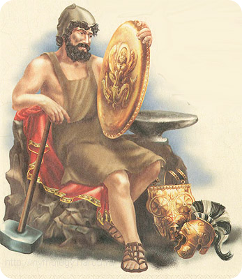

Кузница Гефеста
Однажды Зевс решил наказать свою жену, но за нее заступился один Гефест,
и по этой причине его во второй раз выбросили на землю.Так юноша попал на остров под
названием Лемнос, и во время падения повредил вторую ногу.
Поскольку жители острова отнеслись к Гефесту хорошо, то он полюбил этот остров.
В честь юноши был назван город – Гефестий.
Именно тут, под огнедышащей горой, находится главная кузница Гефеста.Там юноша работал
вместе с циклопами.
Когда Гефест был на Олимпе, он всем богам и себе построил величественные
дворцы, только в своем он сделал кузнецу. Все свое свободное время Гефест проводил в кузнице,
где изготавливал просто чудесные вещи как: украшения из серебра и золота, несокрушимое оружие,
кубки и чашки. После работы, Гефест идет на пир, который устроил Зевс. Там он достаточно
быстро мешал ссоре родителей и менял их гнев на радость, разливая в кубки вино.
Спустя время, женой Гефеста стала богиня Афродита. Гефест не чаял души в своей жене
и не уделял особого внимания, когда Афродита ему изменяла. Большое количество времени
Гефест находился в своей кунице, нежели с женой, и таким образом Гефест изготовил из золота
служанок, которые выполняли все его приказы.
Гефест был полностью погружен в работе и не замечал, что происходит на земле.
Он делал для людей разные вещи, войны, которые происходили на земле, его не интересовали.